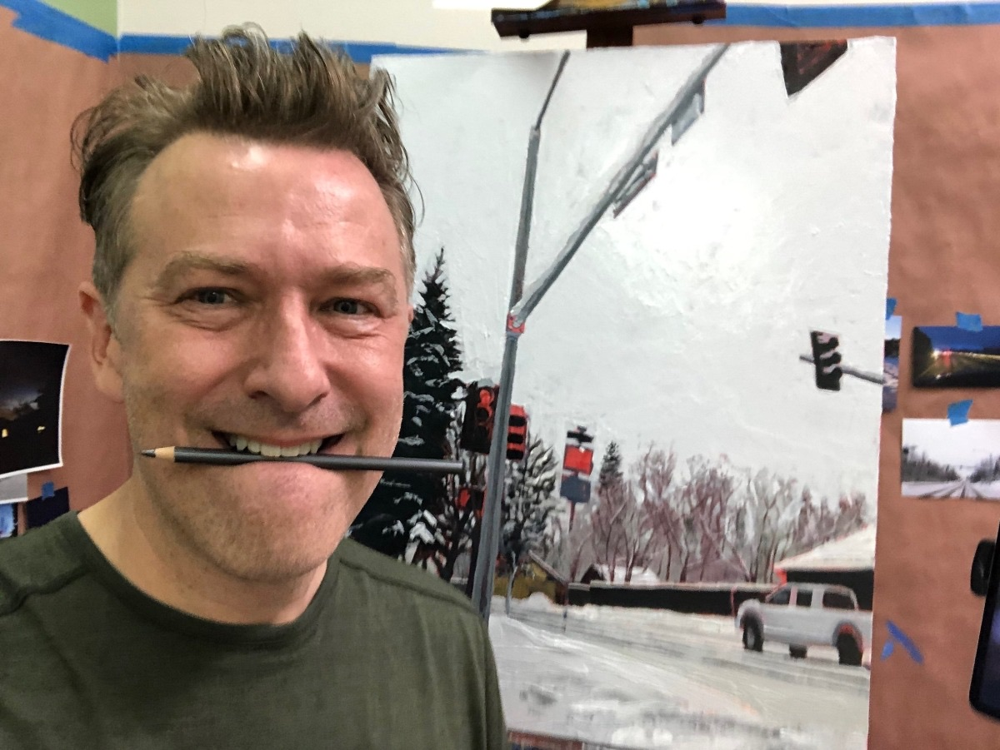

About Me
I'm Kevin,
I grew up in Anchorage, Alaska where I took an early interest in making art. I studied painting at the California College of the Arts, and have maintained a focus on my hometown as a muse for my work.
Growing up in Alaska, your first exposure to art tends to be depictions of Alaska's nature and wildlife. But there's more to life in Alaska, and the more I traveled outside Alaska, the more I came to appreciate the unique visual language of everyday life in my hometown. It's at once mundane, beautiful and for me, comforting.

Let's stay connected: